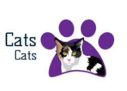
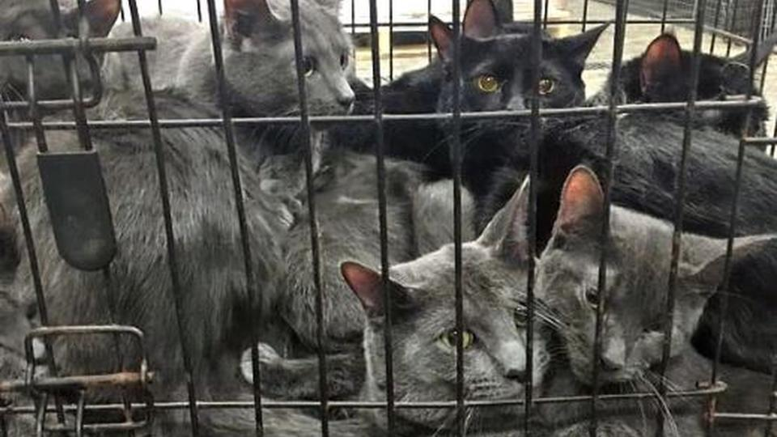

About us.
Photo of logo:
We are Cat place.
What we do.
description of what we doo.
Look at these guys lol.
We are a no kill, non-profit, volunteer, tax-exempt organization. Our mission is to rescue cats in the [LOCATION] area; to provide temporary care either in foster homes or in a permanent shelter for such animals, while facilitating their adoption in appropriate homes; to cooperate with other organizations dedicated to the rescue and care of homeless animals, and to work for humane solutions to the problem of pet overpopulation.
How we function
Yeah

You hand us money.
Income is derived from adoptions, memberships, thrift store sales, fundraising events, and bequests.